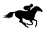

<div class="sticky top-0">
  <nav class="grid grid-rows-1 grid-flow-col gap-4 text-2xl bg-amber-400 shadow-md border border-solid border-blue-500 border-2 justify-items-center items-center">

    

    <div class="row-start-1 columns-start-2 content-center border border-r-2 border-solid border-blue-500 border-2">Pferderennen</div>


    <!--<button class="row-start-1 columns-start-3 content-right border border-solid border-blue-500 border-2 justify-self-end m-5" mat-button [matMenuTriggerFor]="menu">Login</button>-->

    

    <mat-menu #menu="matMenu">
      <button mat-menu-item routerLink="/login" routerLinkActive="active" ariaCurrentWhenActive="page" class="basis-1/2">Login</button>
      <button mat-menu-item routerLink="/sign-up"  routerLinkACtive="active" ariaCurrentWhenActive="page" class="basis">Sign-up</button>
    </mat-menu>
  </nav>
</div>


<button class="p-5 border border-solid border-amber-900" (click)="profileClicked()">OK</button>

<!-- The routed views render in the <router-outlet>-->
<router-outlet></router-outlet>
